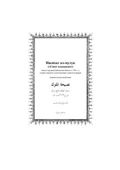

НАHukmdorlar va rahbarlar uchun adolat va e'tiqod qoidalariga bag'ishlangan asar.
Ushbu asar hukmdorlar va rahbarlarga bag'ishlangan bo'lib, adolat, e'tiqod va axloqiy tamoyillarni yoritadi. Matnda insonning yaratilishi, imon ildizlari hamda ibodat va adolatning ahamiyati haqida qimmatli nasihatlar keltirilgan.